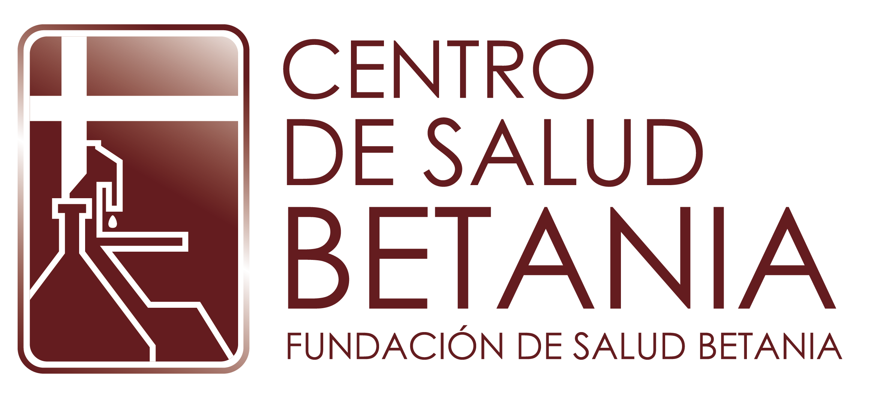
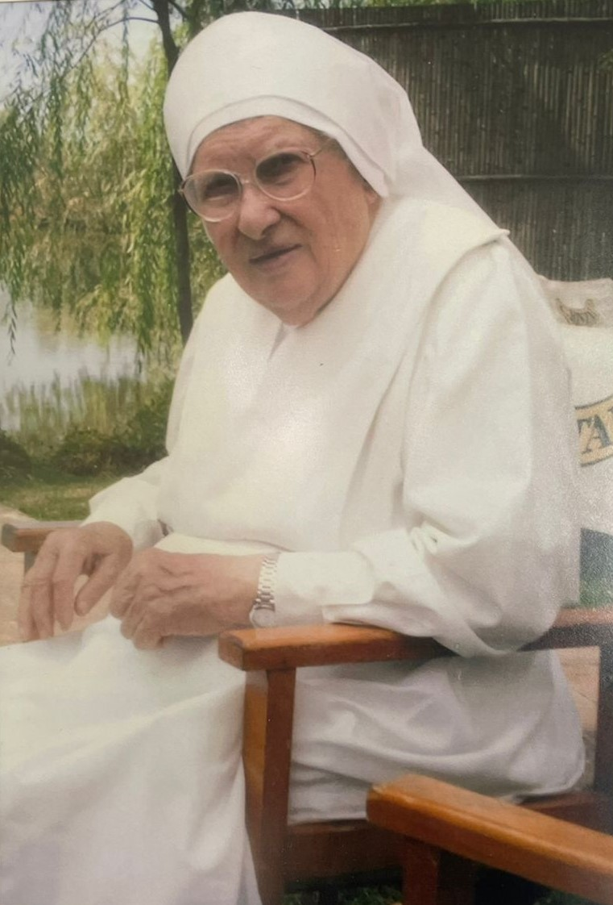
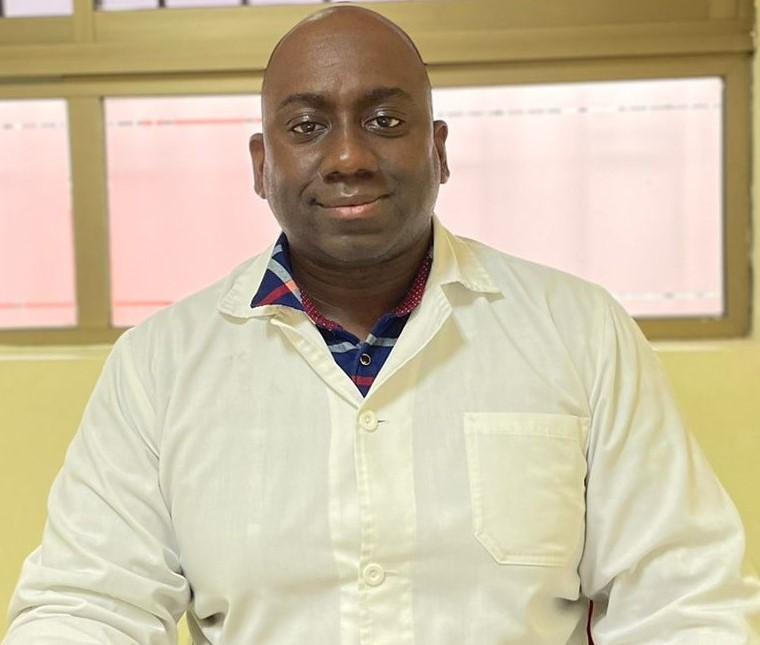

Dra. Taty Marcillo
Médico General
Atención Médica
Consulta General

El Policlínico Santa Marta se inicia el año 1949, bajo la responsabilidad de Sor Celeste Redaelli, con el propósito de entregar una atención integral de salud a la comunidad de Curicó basada en valores cristianos, humanizada y con especial énfasis en la atención domiciliaria.
En el año 1981, con la ayuda de la Providencia y bajo la responsabilidad de Sor Eliana Martinelli, se funda el laboratorio clínico ubicado en Avenida Camilo Henríquez 39.
Con el paso del tiempo se ampliaron las instalaciones, se incorporó equipamiento de tecnología moderna y se agregaron nuevas prestaciones clínicas para ofrecer una atención integral, cálida y segura para nuestros usuarios.

Fundadora
Su compromiso con la comunidad permitió desarrollar un espacio de atención de salud basado en la vocación de servicio, la atención humanizada y el respeto por la dignidad de cada persona.
La Fundación de Salud Betania es un centro de salud privado cuyo objetivo es responder a las necesidades de atención de salud de la comunidad, ofreciendo prestaciones preventivas, curativas y de rehabilitación de baja complejidad.
Nuestro compromiso es brindar una atención humanizada, accesible, oportuna, segura y de calidad, con profesionales comprometidos con el servicio a los demás y con el respeto a la dignidad de cada persona.
Médico General

Medicina Familiar
Kinesiologo
Podólogo
Fonoaudióloga